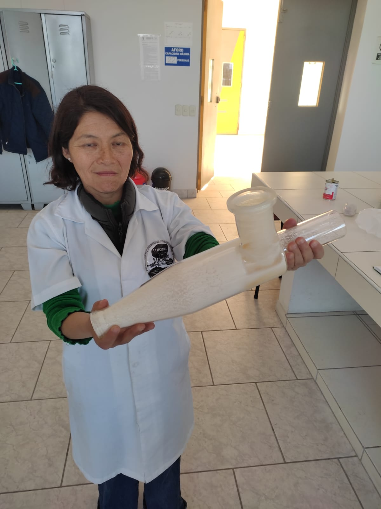

Maria Fernanda es Ingeniera Alimentaria orgullosamente originaria de Puno. Con una herencia arraigada en la tradición láctea de las alturas, hoy trabaja en Tacna para traer a tu mesa yogures artesanales de una pureza inigualable.
Su misión es simple: unir la ciencia de los alimentos con el amor por lo natural. Cada receta es supervisada para garantizar que recibas salud y sabor en cada gota.
Sin colorantes artificiales ni espesantes industriales.
Ideal para tu salud digestiva y sistema inmunológico.
Recetas que respetan el tiempo natural de fermentación.